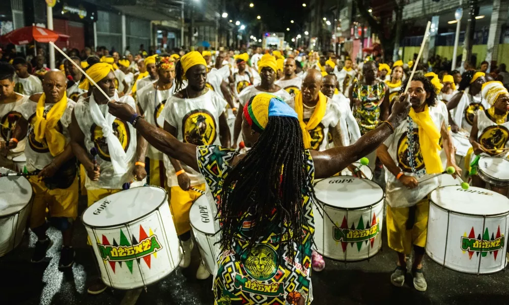
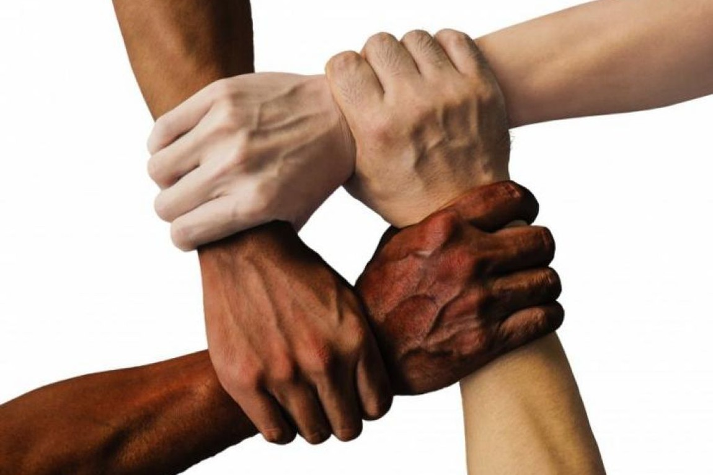

O que é a Consciência Negra?
O Dia da Consciência Negra celebra a contribuição do povo africano e afrodescendente na formação cultural, social e política do Brasil. É um chamado à reflexão sobre igualdade racial, valorização da identidade negra e combate ao racismo.

Cultura Afro-Brasileira
A música, a culinária, a religião e a arte africana enriquecem nossa identidade.

História e Resistência
Dos quilombos aos movimentos atuais, a luta pela liberdade sempre existiu.

Igualdade Racial
O dia reforça o compromisso com justiça e respeito para todas as pessoas.